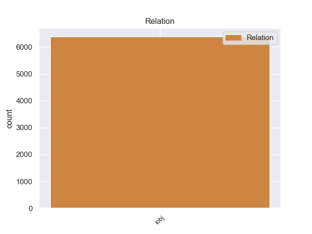
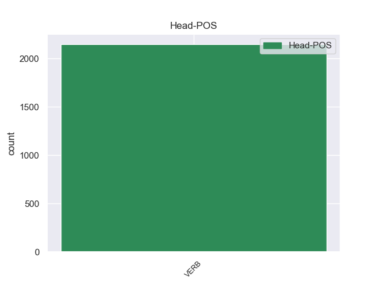
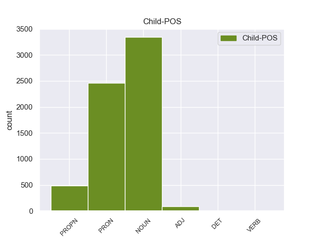

Distribution of features within this leaf



Morphosyntax Rules sorted by frequency.
- When the dependent token is the indirect object(iobj) of the head token, the Case needs to be Dat.
1 Но _ _ _ _ 0 _ _ _
2 кто-то _ _ _ _ 0 _ _ _
3 идет _ _ _ _ 0 _ _ _
4 мне я PRON _ Case=Dat|Number=Sing|Person=1 5 iobj 5:iobj _
5 навстречу навстречу ADV _ Degree=Pos 0 _ _ _
6 и _ _ _ _ 0 _ _ _
7 , _ _ _ _ 0 _ _ _
8 может _ _ _ _ 0 _ _ _
9 быть _ _ _ _ 0 _ _ _
10 , _ _ _ _ 0 _ _ _
11 прошел _ _ _ _ 0 _ _ _
12 уже _ _ _ _ 0 _ _ _
13 пол _ _ _ _ 0 _ _ _
14 пути _ _ _ _ 0 _ _ _
15 … _ _ _ _ 0 _ _ _
non-conforming Examples:
1 Танки _ _ _ _ 0 _ _ _
2 с _ _ _ _ 0 _ _ _
3 фронта _ _ _ _ 0 _ _ _
4 и _ _ _ _ 0 _ _ _
5 с _ _ _ _ 0 _ _ _
6 тыла _ _ _ _ 0 _ _ _
7 двинутся _ _ _ _ 0 _ _ _
8 теперь _ _ _ _ 0 _ _ _
9 навстречу навстречу ADV _ Degree=Pos 0 _ _ _
10 друг друг NOUN _ Animacy=Anim|Case=Nom|Gender=Masc|Number=Sing 9 iobj 9:iobj _
11 другу _ _ _ _ 0 _ _ _
12 , _ _ _ _ 0 _ _ _
13 и _ _ _ _ 0 _ _ _
14 все _ _ _ _ 0 _ _ _
15 , _ _ _ _ 0 _ _ _
16 что _ _ _ _ 0 _ _ _
17 окажется _ _ _ _ 0 _ _ _
18 между _ _ _ _ 0 _ _ _
19 ними _ _ _ _ 0 _ _ _
20 , _ _ _ _ 0 _ _ _
21 будет _ _ _ _ 0 _ _ _
22 раздавлено _ _ _ _ 0 _ _ _
23 . _ _ _ _ 0 _ _ _
1 Низко _ _ _ _ 0 _ _ _
2 , _ _ _ _ 0 _ _ _
3 не _ _ _ _ 0 _ _ _
4 снижаясь _ _ _ _ 0 _ _ _
5 , _ _ _ _ 0 _ _ _
6 пронеслись _ _ _ _ 0 _ _ _
7 вдогон вдогон ADV _ Degree=Pos 0 _ _ _
8 друг друг NOUN _ Animacy=Anim|Case=Nom|Gender=Masc|Number=Sing 7 iobj 7:iobj _
9 другу _ _ _ _ 0 _ _ _
10 стаи _ _ _ _ 0 _ _ _
11 огненных _ _ _ _ 0 _ _ _
12 пуль _ _ _ _ 0 _ _ _
13 : _ _ _ _ 0 _ _ _
14 из _ _ _ _ 0 _ _ _
15 метели _ _ _ _ 0 _ _ _
16 надвигался _ _ _ _ 0 _ _ _
17 к _ _ _ _ 0 _ _ _
18 краю _ _ _ _ 0 _ _ _
19 оврага _ _ _ _ 0 _ _ _
20 танк _ _ _ _ 0 _ _ _
21 . _ _ _ _ 0 _ _ _
1 Нравился нравиться VERB _ Aspect=Imp|Gender=Masc|Mood=Ind|Number=Sing|Tense=Past|VerbForm=Fin|Voice=Mid 0 _ _ _
2 и _ _ _ _ 0 _ _ _
3 он _ _ _ _ 0 _ _ _
4 сам сам ADJ _ Case=Nom|Degree=Pos|Gender=Masc|Number=Sing 1 iobj 1:iobj _
5 себе _ _ _ _ 0 _ _ _
6 : _ _ _ _ 0 _ _ _
7 крепкие _ _ _ _ 0 _ _ _
8 лыжные _ _ _ _ 0 _ _ _
9 ботинки _ _ _ _ 0 _ _ _
10 , _ _ _ _ 0 _ _ _
11 шерстяные _ _ _ _ 0 _ _ _
12 носки _ _ _ _ 0 _ _ _
13 почти _ _ _ _ 0 _ _ _
14 до _ _ _ _ 0 _ _ _
15 колен _ _ _ _ 0 _ _ _
16 , _ _ _ _ 0 _ _ _
17 толстый _ _ _ _ 0 _ _ _
18 мохнатый _ _ _ _ 0 _ _ _
19 свитер _ _ _ _ 0 _ _ _
20 и _ _ _ _ 0 _ _ _
21 австрийская _ _ _ _ 0 _ _ _
22 шапочка _ _ _ _ 0 _ _ _
23 с _ _ _ _ 0 _ _ _
24 козырьком _ _ _ _ 0 _ _ _
25 , _ _ _ _ 0 _ _ _
26 но _ _ _ _ 0 _ _ _
27 больше _ _ _ _ 0 _ _ _
28 всего _ _ _ _ 0 _ _ _
28.1 _ _ _ _ _ 0 _ _ _
29 лыжи _ _ _ _ 0 _ _ _
30 , _ _ _ _ 0 _ _ _
31 прекрасные _ _ _ _ 0 _ _ _
32 клееные _ _ _ _ 0 _ _ _
33 лыжи _ _ _ _ 0 _ _ _
34 , _ _ _ _ 0 _ _ _
35 стянутые _ _ _ _ 0 _ _ _
36 ремешками _ _ _ _ 0 _ _ _
37 . _ _ _ _ 0 _ _ _
1 Так _ _ _ _ 0 _ _ _
2 они _ _ _ _ 0 _ _ _
3 и _ _ _ _ 0 _ _ _
4 шли _ _ _ _ 0 _ _ _
5 , _ _ _ _ 0 _ _ _
6 взбираясь _ _ _ _ 0 _ _ _
7 и _ _ _ _ 0 _ _ _
8 скатываясь _ _ _ _ 0 _ _ _
9 , _ _ _ _ 0 _ _ _
10 отдыхая _ _ _ _ 0 _ _ _
11 на _ _ _ _ 0 _ _ _
12 поваленных _ _ _ _ 0 _ _ _
13 деревьях _ _ _ _ 0 _ _ _
14 , _ _ _ _ 0 _ _ _
15 улыбаясь улыбаться VERB _ Aspect=Imp|Tense=Pres|VerbForm=Conv|Voice=Mid 0 _ _ _
16 друг друг NOUN _ Animacy=Anim|Case=Nom|Gender=Masc|Number=Sing 15 iobj 15:iobj _
17 другу _ _ _ _ 0 _ _ _
18 . _ _ _ _ 0 _ _ _
1 Он _ _ _ _ 0 _ _ _
2 доставал _ _ _ _ 0 _ _ _
3 из-под _ _ _ _ 0 _ _ _
4 террасы _ _ _ _ 0 _ _ _
5 дрова _ _ _ _ 0 _ _ _
6 , _ _ _ _ 0 _ _ _
7 грохал _ _ _ _ 0 _ _ _
8 возле _ _ _ _ 0 _ _ _
9 печки _ _ _ _ 0 _ _ _
10 , _ _ _ _ 0 _ _ _
11 шуршал _ _ _ _ 0 _ _ _
12 бумагой _ _ _ _ 0 _ _ _
13 , _ _ _ _ 0 _ _ _
14 разжигал _ _ _ _ 0 _ _ _
15 , _ _ _ _ 0 _ _ _
16 кряхтел _ _ _ _ 0 _ _ _
17 , _ _ _ _ 0 _ _ _
18 а _ _ _ _ 0 _ _ _
19 ей _ _ _ _ 0 _ _ _
20 не _ _ _ _ 0 _ _ _
21 хотелось хотеться VERB _ Aspect=Imp|Gender=Neut|Mood=Ind|Number=Sing|Tense=Past|VerbForm=Fin|Voice=Mid 0 _ _ _
22 ничего ничто PRON _ Case=Gen 21 iobj 21:iobj SpaceAfter=No
23 , _ _ _ _ 0 _ _ _
24 и _ _ _ _ 0 _ _ _
25 она _ _ _ _ 0 _ _ _
26 была _ _ _ _ 0 _ _ _
27 не _ _ _ _ 0 _ _ _
28 рада _ _ _ _ 0 _ _ _
29 , _ _ _ _ 0 _ _ _
30 что _ _ _ _ 0 _ _ _
31 поехала _ _ _ _ 0 _ _ _
32 с _ _ _ _ 0 _ _ _
33 ним _ _ _ _ 0 _ _ _
34 в _ _ _ _ 0 _ _ _
35 этот _ _ _ _ 0 _ _ _
36 раз _ _ _ _ 0 _ _ _
37 . _ _ _ _ 0 _ _ _